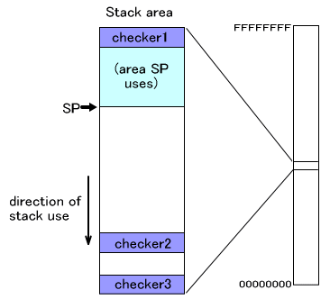
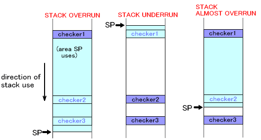

The stack region is used when a program is running. This region is used for saving registers and for storing automatic variables. A stack overflow occurs when the amount of stack consumed exceeds the size of the region created for use as the stack region. Because it is difficult for developers to see how much of the stack region is being used, and because most programs will have advanced further before the bugs caused by a stack overflow are triggered, it is difficult to track down stack-related bugs.
TWL-SDK includes a mechanism to check for stack overflows to help make this easier. In principle, this works by writing a certain value to the stack region, then checking whether that value has since been overwritten in order to determine if that particular region was used for the stack. TWL-SDK places these checking mechanisms in three locations: the top of the stack, the bottom of the stack, and an arbitrary position within the stack. These checking mechanisms are also called canaries.
Magic numbers that are not often used as addresses are chosen as the canaries' values.

In the figure above, if canary 1 is overwritten, there is a good chance that a stack underflow has occurred. (There is always a chance that the canary has been overwritten because of a bug in a program completely unrelated to the stack. The same caveat also applies below.)
If canary 3 is overwritten, there is a good chance that a stack overflow has occurred.
There is also another canary that the developer is free to set at will. This corresponds to canary 2 in the figure above. However, if a stack overflow has actually occurred, the program's behavior will be undefined; in order to detect in advance that a stack overflow is likely to occur, you can consider placing the user-defined canary near the bottom of the stack by setting the warning offset, so this canary can function as a warning threshold.

Creating a thread automatically writes magic numbers at the top and bottom of the stack. (This is equivalent to checker1 and checker3 in the previous diagram.) The user-configurable warning level checker, equivalent to checker2 in the previous diagram, is not set. If necessary, you can set it using the OS_SetThreadStackWarningOffset function. Note that setting a warning offset for the canary when the region in question is already being used as a stack will affect program behavior. Be sure to set a warning offset when the stack is not being used (for example, immediately after the thread is created).
A checker is created for each thread.
A checker is placed at the top and bottom of the stack even for the thread that directly calls the OS_InitThread function (launch thread). Checkers are not placed for idle threads.
Call OS_CheckStack() from your application to find out whether the magic numbers that were written as canaries have since been changed to different values. The system will halt on OS_Panic() if even one of the three canaries has been overwritten. In FINALROM builds, this call will be overwritten with code that has no effect.
If you want to look up the function's return value instead of halting on OS_Panic(), call OS_GetStackStatus(). This returns accurate information even for FINALROM builds.
These canary-checking functions are only valid for the stack of the current thread. They are unable to detect stack overflows in other threads.
Canaries to check for stack overflows can also be set for the IRQ stack that is used when interrupts occur.
OS_SetIrqStackChecker(): Writes magic numbers as canaries for checking the IRQ stack.
OS_SetIrqStackWarningOffset(): Sets the warning offset position for the IRQ stack and writes a magic number as a canary there.
OS_CheckIrqStack(): Finds out whether any of the IRQ stack canaries were overwritten, and halts the program if so.
OS_GetIrqStackStatus(): Looks up whether any IRQ stack canaries have been overwritten and returns the result.
OS Function List: Debug (Stack Check)
2008/09/16 Initial version.
CONFIDENTIAL